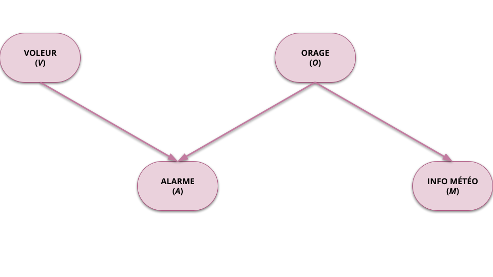

Modélisation stochastique et approche bayésienne
Introduction aux Réseaux Bayésiens
Roland Donat
CyberData S4
Objectifs de la séance
- Replacer le développement des techniques bayésiennes dans l'Histoire scientifique
- Comprendre le principe de raisonnement bayésien
- Introduire le formalisme des réseaux bayésiens
- Savoir construire un réseau bayésien pour un problème donné
- Découvrir les outils de modélisation
GeNIeetPyAgrum
Un peu d'Histoire

Une histoire de jeux
Révérend Thomas Bayes (1702–1761)
- 1763 : An Essay towards solving a Problem in the Doctrine of Chances
- Notion de probabilité conditionnelle : If there be two subsequent events, the probability of the second \(b/N\) and the probability of both together \(P/N\), and it being first discovered that the second event has also happened, the probability I am right [i.e., the conditional probability of the first event being true given that the second has happened] is \(P/b\).
- Théorème de Bayes

Les travaux se poursuivent…
Pierre-Simon Laplace (1749–1827)
- 1774 : Mémoire sur la Probabilité des Causes par les Événements
- 1812 : Reformulation et clarification des travaux de Bayes

deux siècles plus tard…
Fréquentistes vs Bayésiens (la guerre est toujours en cours)
- Fréquentistes : Seules les données ont de l'importance !
- Bayésiens : Les préjugés sont précieux !

Illustration de Christophe Michel, 2018.
Les débuts de l'IA
L'ère des systèmes experts (1970-1990)
- Formalisation des connaissances sur un système sous forme de règles déterministes
- Moteur d'inférence reposant sur la logique booléenne
- Déduction d'informations à partir d'une base de règles
- Exemple :
SI X = VRAI ET Y = FAUX ALORS Z = VRAI

La domination de l'IA
Judea Pearl (1936–) : Père des réseaux bayésiens
- 1982 : Reverend Bayes on inference engines : A distributed hierarchical approach
- \(P(\text{Revenus} > 1500) = 0.3\) et \(P(\text{Abonné salle de sport}) = 0.2\) Alors \(P(\text{Achat chaussures running}) = 0.07\)
- 1988 : Probabilistic Reasoning in Intelligent Systems : Networks of Plausible Inference
- 2011 : Judea Pearl reçoit le Prix Turing

Le raisonnement bayésien

Principe général
Principes de la philosophie bayésienne
- L'approche bayésienne repose sur l'utilisation du langage des probabilités pour réaliser des raisonnements
- Cette approche de raisonnement généralise la logique booléenne
- Chaque raisonnement se matérialise par une suite de calculs probabilistes
- Chaque raisonnement tient compte des a priori sur les phénomènes étudiés
- La conclusion d'un raisonnement bayésien est donnée sous la forme d'une loi de probabilité

Exemple de raisonnement
Alarme et vol de voiture
- Situation : J'ai été réveillé par l'alarme de ma voiture en pleine nuit
- Question : Ma voiture est-elle en train de se faire voler ?
Raisonnement de type bayésien
- Modélisation : on liste les phénomènes qui pourraient expliquer l'alarme (e.g. fausse alarme, tremblement de terre, criminalité, etc…) et on tente d'établir leur probabilité
- Inférence : on réalise des calculs de probabilité pour obtenir la réponse qui nous intéresse, i.e. ma voiture est-elle en train de se faire voler ?
- Décision : si, compte tenu du contexte, la probabilité d'un vol est inférieur à un seuil donné, je me recouche, sinon j'appelle la police
Théorème de Bayes
Théorème de Bayes
- Le théorème (ou formule) de Bayes permet d'exprimer la loi d'un phénomène \(Y\) conditionnellement à un phénomène \(X\) en fonction de la loi du phénomène \(X\) conditionnellement au phénomène \(Y\) et de la loi marginale du phénomène \(X\).
- Soient \(X\) et \(Y\) deux variables aléatoires (v.a.) représentant deux phénomènes aléatoires, on a :
\[
P(Y|X) = \frac{P(X|Y) P(Y)}{P(X)}
\]
- les lois \(P(X)\) et \(P(Y)\) sont appelées lois a priori des phénomènes \(X\) et \(Y\) respectivement (ou lois marginales)
- la loi \(P(X|Y)\) représente la vraisemblance du phénomène \(X\) par rapport au phénomène \(Y\), autrement dit la "plausibilité" d'observer \(X\) alors que \(Y\) s'est produit
Conséquence
- Le théorème de Bayes permet d'effectuer des raisonnements probabilistes (de l'inférence) impliquant deux phénomènes aléatoires à l'aide d'a priori et de conditionnement
- Et si la problématique décisionnelle implique plus de deux phénomènes ou variables aléatoires, les réseaux bayésiens vont nous sauver !
Théorème de Bayes
Modélisation
- Fiabilité de l'alarme : \(P(\text{Alarme} | \text{Vol}) = 0.999\)
- Taux de fausses alarmes : \(P(\text{Alarme} | \text{Pas de vol}) = 0.005\)
Théorème de Bayes
Modélisation
- Fiabilité de l'alarme : \(P(\text{Alarme} | \text{Vol}) = 0.999\)
- Taux de fausses alarmes : \(P(\text{Alarme} | \text{Pas de vol}) = 0.005\)
L'alarme retentit 😨... Dois-je appeler la police ?
Je suis fréquentiste (personne n'est parfait) :
je construits un test d'hypothèses :
\begin{cases} H_{0} : & ~\text{Pas de vol} \\ H_{1} : & ~\text{Vol} \end{cases}- Je sais que \(P(\text{Alarme} | \text{Pas de vol}) = 0.005 < 0.05\)
- Il est trop improbable qu'il s'agisse d'une fausse alarme compte tenu de sa fiabilité, je rejette l'hypothèse \(H_{0}\)…
- J'appelle la police !
Théorème de Bayes
Modélisation
- Fiabilité de l'alarme : \(P(\text{Alarme} | \text{Vol}) = 0.999\)
- Taux de fausses alarmes : \(P(\text{Alarme} | \text{Pas de vol}) = 0.005\)
L'alarme retentit 😨... Dois-je appeler la police ?
Je suis bayésien :
- Je dois calculer \(P(\text{Vol}|\text{Alarme})\), i.e. probabilité d'un vol sachant que l'alarme retentit
- D'après le théorème de Bayes : \[ P(\text{Vol}|\text{Alarme}) = \frac{P(\text{Alarme} | \text{Vol}) P(\text{Vol})}{P(\text{Alarme})} \]
- La décision repose donc sur ma "croyance" a priori sur l'occurrence d'un vol représentée mathématiquement par la probabilité \(P(\text{Vol})\)
- Par exemple, si j'habite dans les Bouches-du-Rhône, la probabilité \(P(\text{Vol})\) est plus importante que si j'habite dans la Creuse
Exemple de bayésiens
Question
Vous connaissez tous une industrie qui repose sur les raisonnements bayésiens, laquelle ?

Les réseaux bayésiens

Les réseaux bayésiens en trois points
Qu'est ce que c'est?
- Les réseaux bayésiens désignent un formalisme de modélisation graphique
- Ce formalisme permet de représenter des phénomènes aléatoires complexes sous forme de lois de probabilité conditionnelles
Sur quoi ça repose?
- Théorie des graphes (aspect qualitatif)
- Théorie des probabilités (aspect quantitatif)
En quoi est-ce intéressant
- Formalisme graphique intuitif (facilite la communication)
- Puissance de modélisation
- Puissance de raisonnement par inférence probabiliste
Un exemple pour comprendre
Vol ou pas vol ?
- Replaçons nous dans notre problématique d'alarme et de vol de voiture
- Considérons à présent que notre alarme est sensible aux orages
- Cela se matérialise par une probabilité de fausses alarmes qui augmente avec la présence d'un orage et de son intensité (données constructeurs)
- On suppose également que la survenue d'un orage peut avoir été prévue par les services météo (données sur les performances des prévisions météo)
- La problématique du vol et de l'alarme n'est donc plus bivariée !
L'alarme retentit en pleine nuit... Dois-je appeler la police ?
- Si j'entends un fort orage
- Si avant de dormir, j'ai lu un bulletin météo indiquant que de petits orages risquaient d'avoir lieu pendant la nuit ?
- Que dire sur la météo si je vois un voleur s'emparer de mon véhicule ?
Un exemple pour comprendre

Un exemple pour comprendre

Un exemple pour comprendre

Un exemple pour comprendre

Un exemple pour comprendre

Un exemple pour comprendre

Un exemple pour comprendre

Un exemple pour comprendre

Un exemple pour comprendre

Définition formelle
Réseau bayésien (RB)
Un réseau bayésien (RB), noté \(\mathcal{M}\), permet de représenter la loi (jointe) d'une suite de variables aléatoires (v.a.) \(X_{1},\ldots,X_{n}\) par :
- Un graphe orienté sans circuit \(\mathcal{G}\) où :
- Les noeuds représentent les v.a.
- Les arcs indiquent des relations de dépendances
- Les Lois de Probabilité Conditionnelles (LPC) de chaque v.a. \(X_{i}\) sachant ses parents \(\text{pa}(X_{i})\), notées \(P(X_{i}|\text{pa}(X_{i}))\)

Domaines d'application
Quelques champs d'applications
- Intelligence artificielle
- Biologie, Médecine
- Marketing, Finance
- Sûreté de fonctionnement
- etc…
- Applications à l'aide à la décision en général
Exemple : Modèle du réseau bayésien Alarme
Types d'analyses possibles
- Analyse prévisionnelle : Expliquer un phénomène par rapport à son contexte
- Diagnostic : Comprendre le contexte/les causes associé à l'occurrence d'un événement
- Simulation : Étudier un système complexe en générant des scénarios
Propriété fondamentale
Factorisation de la loi jointe
La loi jointe d'une suite de v.a. \(X_{1}, \ldots, X_{n}\) représentée par un réseau bayésien se factorise comme le produit des LPC de chacune des variables : \[ P(X_{1}, \ldots,X_{n}) = \prod_{i=1}^{n} P(X_{i}| \text{pa}(X_{i})) \]
Rappel
- Rappel de la formule de Bayes généralisée (toujours vraie) : \[ P(X_{1}, \ldots,X_{n}) = P(X_{1}) \times P(X_{2}|X_{1}) \times P(X_{3}|X_{1},X_{2}) \times \ldots \times P(X_{n}|X_{1}, \ldots,X_{n-1}) \]
- La factorisation dans un RB permet de simplifier la formule de Bayes généralisée
Propriété fondamentale

Factorisation
Complexité
Complexité spatiale d'une LPC discrète et finie
- Soient \(\boldsymbol{X} = X_{1},\ldots,X_{n}\) et \(\boldsymbol{Y} = Y_{1},\ldots,Y_{m}\) deux suites de v.a. à valeurs dans les ensembles discrets et finis \(\mathcal{X}_{1}, \ldots, \mathcal{X}_{n}\) et \(\mathcal{Y}_{1}, \ldots, \mathcal{Y}_{m}\)
- La complexité spatiale associée à la LPC \(P(X_{1},\ldots,X_{n}|Y_{1},\ldots,Y_{m}) = P(\boldsymbol{X}|\boldsymbol{Y})\), notée \(CS(P(\boldsymbol{X}|\boldsymbol{Y}))\), est définie par le nombre de configurations de valeurs différentes que peuvent prendre les v.a. \(X_{1},\ldots,X_{n}, Y_{1}, \ldots, Y_{m}\)
- Autrement dit : \[ CS(P(\boldsymbol{X}|\boldsymbol{Y})) = \prod_{i = 1}^{n} |\mathcal{X}_{i}| \prod_{j = 1}^{m} |\mathcal{Y}_{j}| \] où \(|\mathcal{X}_{i}|\) est le nombre d'éléments dans l'ensemble \(\mathcal{X}_{i}\)
Exercice
- Donner les complexités spatiales des LPC du RB "Alarme"
Complexité
Complexité probabiliste d'une LPC discrète et finie
- Soient \(\boldsymbol{X} = X_{1},\ldots,X_{n}\) et \(\boldsymbol{Y} = Y_{1},\ldots,Y_{m}\) deux suites de v.a. à valeurs dans les ensembles discrets et finis \(\mathcal{X}_{1}, \ldots, \mathcal{X}_{n}\) et \(\mathcal{Y}_{1}, \ldots, \mathcal{Y}_{m}\)
- La complexité probabiliste associée à la LPC \(P(X_{1},\ldots,X_{n}|Y_{1},\ldots,Y_{m}) = P(\boldsymbol{X}|\boldsymbol{Y})\), notée \(CP(P(\boldsymbol{X}|\boldsymbol{Y}))\), est définie par le nombre de paramètres (probabilités) nécessaires pour définir la LPC
- Autrement dit : \[ CP(P(\boldsymbol{X}|\boldsymbol{Y})) = \prod_{i = 1}^{n} (|\mathcal{X}_{i}| - 1) \prod_{j = 1}^{m} |\mathcal{Y}_{j}| \]
- La CP tient simplement compte du fait qu'une LPC doit sommer à 1 pour chaque configuration des variables de conditionnement
- La CP mesure le potentiel de modélisation d'une loi (notion de degré de liberté)
Exercice
- Donner les complexités probabilistes des LPC du RB "Alarme"
Complexité
Complexité d'une loi jointe représentée par un RB
- Soit \(X_{1},\ldots,X_{n}\) une suite de v.a. à valeurs dans les ensembles discrets et finis \(\mathcal{X}_{1}, \ldots, \mathcal{X}_{n}\)
- La complexité spatiale (resp. probabiliste) d'une loi jointe factorisée dans un RB est définie comme étant la somme des complexités spatiales (resp. probabilistes) associées à chacune des LPC \(P(X_{i}|\text{pa}(X_{i}))\)
- La complexité spatiale du RB a pour expression : \[ CS(RB) = \sum_{i = 1}^{n} CS(P(X_{i}|\text{pa}(X_{i}))) = \sum_{i = 1}^{n} |\mathcal{X}_{i}| \times \prod_{\mathcal{X} \in \text{pa}(\mathcal{X}_{i})} |\mathcal{X}| \]
- La complexité probabiliste a pour expression : \[ CP(RB) = \sum_{i = 1}^{n} CP(P(X_{i}|\text{pa}(X_{i}))) = \sum_{i = 1}^{n} (|\mathcal{X}_{i}| - 1) \times \prod_{\mathcal{X} \in \text{pa}(\mathcal{X}_{i})} |\mathcal{X}| \]
Complexité
RB = Représentation parcimonieuse
- Un RB est une représentation compacte d'un processus aléatoire
- Moins il y a d'arcs dans le graphe :
- Plus des hypothèses d'indépendances conditionnelles entre les variables sont posées
- Plus le potentiel de modélisation, i.e. la capacité à représenter des phénomènes complexes, diminue (\(CP\) faible)
- Plus la représentation par RB est avantageuse du point de vue du stockage, du paramétrage et de la complexité calculatoire (\(CS\) faible)
Exercice
Calculer les complexités du modèle "Alarme" avec et sans RB
Relations d'indépendances
RB et indépendances conditionnelles
- Un RB peut être vu comme un codage de relations d'indépendances conditionnelles parmi un ensemble de variables aléatoires
- Attention :
- L'absence d'arc entre deux variables ne signifie pas qu'elles sont indépendantes
- Un arc entre deux variables ne signifie pas toujours qu'elles sont dépendantes
Structures fondamentales
- Les relations d'indépendances dans un RB se déduisent des trois structures fondamentales
suivantes :
- Connexion série : \(X \rightarrow Y \rightarrow Z\)
- Connexion divergente : \(X \leftarrow Y \rightarrow Z\)
- Connexion convergente (ou V-structure) : \(X \rightarrow Y \leftarrow Z\)
Relations d'indépendances

Propriétés
- \(X\) et \(Z\) sont a priori dépendantes
- Si \(Y\) est connue, alors \(X\) et \(Z\) sont indépendantes
- On dit que \(X\) et \(Z\) sont indépendantes conditionnellement à \(Y\)
- Si on fixe la connaissance marginale sur \(Y\), i.e. \(P(Y)\), la connaissance marginale sur \(X\) ne modifie pas la connaissance marginale sur \(Z\), i.e. \(P(Z)\), (et inversement)
Relations d'indépendances

Propriétés
- \(X\) et \(Z\) sont a priori dépendantes
- Si \(Y\) est connue, alors \(X\) et \(Z\) sont indépendantes
- On dit que \(X\) et \(Z\) sont indépendantes conditionnellement à \(Y\)
- Si on fixe la connaissance marginale sur \(Y\), i.e. \(P(Y)\), la connaissance marginale sur \(X\) ne modifie pas la connaissance marginale sur \(Z\), i.e. \(P(Z)\), (et inversement)
Relations d'indépendances

Propriétés
- \(X\) et \(Z\) sont a priori indépendantes
- Si \(Y\) est connue, alors \(X\) et \(Z\) sont dépendantes
- On dit que \(X\) et \(Z\) sont dépendantes conditionnellement à \(Y\)
- Si on fixe la connaissance marginale sur \(Y\), i.e. \(P(Y)\), la connaissance marginale sur \(X\) modifie la connaissance marginale sur \(Z\), i.e. \(P(Z)\), (et inversement)
Inférence

Problématique

Problématique

Problématique

Méthode d'élimination des variables
Hypothèses d'utilisation
- Méthode adaptée pour les réseaux bayésiens à variables discrètes et finies, i.e. LPC sous forme de tables (matrices)
- Si le phénomène étudié implique des variables continues et/ou non finies, il faut les discrétiser au préalable
Principe
- "Éliminer" par marginalisations successives toutes les variables de la loi jointe qui n'apparaissent pas dans le calcul à réaliser
- Simplifier le calcul à réaliser grâce à la propriété de factorisation des RB et choississant un "bon" ordre d'élimination des variables
Propriétés
- L'ordre d'élimination des variables n'influe pas sur le résultat, i.e. tous les ordres aboutissent au même (bon) résultat
- En revanche, la rapidité des calculs est fortement liée à l'ordre d'élimination
- Méthode de référence implémentée dans la plupart des outils de réseaux bayésiens
Méthode d'élimination des variables

Inférence dans le réseau bayésien Alarme
- La problématique fait intervenir 4 variables aléatoires : Voleur (\(V\)), Alarme (\(A\)), Orage (\(O\)), Info météo (\(M\))
- Le RB qui modélise la problématique permet de factoriser la loi jointe des variables aléatoire comme suit : \[ P(V,A,O,M) = P(V) \times P(A|V; O) \times P(O) \times P(M|O) \]
Méthode d'élimination des variables
Calcul de P(Voleur=oui|Alarme=oui)
Par définition : \[ P(V = \text{oui}|A = \text{oui}) = \frac{P(V = \text{oui}; A = \text{oui})}{P(A = \text{oui})} \]
Calcul du numérateur
On marginalise simplement sur les variables Voleur et Alarme : \[ P(V = \text{oui}; A = \text{oui}) = \sum_{O \in \{\text{non}, \text{faible},\text{fort}\}} \sum_{M \in \{\text{non}, \text{oui}\}} P(V = \text{oui}; A = \text{oui},O,M) \]Méthode d'élimination des variables
Calcul du numérateur par "élimination"
On utilise la propriété de factorisation :
On "élimine" successivement les variables \(M\) et \(O\) en distibuant les sommes dans la factorisation :
Calcul du dénominateur par "élimination"
Principe identique :
Construction pratique d'un réseau bayésien

Problématique
Objectif
- Modéliser un phénomène aléatoire impliquant différentes variables \(X_{1}, \ldots, X_{D}\)
- Utiliser un réseau bayésien afin de représenter au mieux les relations entre les variables
Problèmes
- Comment déterminer la structure du réseau bayésien (i.e. le graphe)?
- Comment estimer les lois de probabilité conditionnelles (LPC) \(P(X_{d}|\text{pa}(X_{d})),~ d = 1, \ldots, D\) ?
Approches envisageables
- Approche par expertise : utilisation d'avis d'experts et connaissances métiers
- Approche statistique : utilisation de bases de données (contenant éventuellement des informations incomplètes)
- Approche mixte : expertise + bases de données
Problématique

Problématique

Problématique

Problématique

Construction par expertise
Acquisition de l'information
- Trouver des personnes expertes fiables et coopératives
- Familiariser ces personnes à la notion de probabilité
- Tenir compte de leurs biais éventuels (souvent inconscients)
- Utiliser un outil pour faciliter le recueil des informations
- Exemple : échelle de probabilité :

Construction par expertise
Problème
- L'expertise métier permet en général de construire des RB fidèles à la réalité opérationnelle
- En revanche, l'humain a intuitivement tendance à introduire des connexions convergentes
- Exemple : Soit \(Y\) un phénomène à expliquer et \(X_{1}, \ldots, X_{D}\), \(D\) facteurs explicatifs possibles
- Structure naturelle : \(X_{1} \to Y, \ldots, X_{D} \to Y\)
- Risque d'explosion combinatoire : Définir \(P(Y|X_{1},\ldots,X_{D})\) nécessite \(2^{D}\) valeurs dans le cas où les variables sont binaires
Solutions possibles
- Inverser les flèches et utiliser une structure naïve : \(Y \to X_{1}, \ldots, Y \to X_{D}\) en assumant les simplifications induites
- Introduction d'un modèle de LPC particulier, e.g. modèle OU-bruité
Apprentissage des LPC
Hypothèses
- On modélise un phénomène aléatoire caractérisé par des variables aléatoires \(X_{1}, \ldots, X_{D}\) dont la loi est représentée par un RB
- Les variables aléatoires \(X_{1}, \ldots, X_{D}\) sont discrètes et finies
- Le graphe du RB est supposé connu
- On dispose d'un jeu de données \(\boldsymbol{D} = (\boldsymbol{x}_{1}, \ldots, \boldsymbol{x}_{N})\) où chaque observation \(\boldsymbol{x}_{n}\) est caractérisée par \(D\) variables \((x_{n,1},\ldots,x_{n,D})\)
Méthode du maximum de vraisemblance
L'estimation du maximum de vraisemblance de chaque LPC d'un RB a pour expression : \[ \hat{P}^{\text{MV}}(X_{d} = x_{d,k}|\text{pa}(X_{d}) = \boldsymbol{x}^{\prime}_{d,j}) = \frac{N_{d,j,k}}{\sum_{k = 1} N_{d,j,k}} \]
- \(x_{d,k}\) : \(k\) -ème valeur possible pour la v.a. \(X_{d}\)
- \(\boldsymbol{x}^{\prime}_{d,j}\) : \(j\) -ème configuration de valeurs possibles pour les parents de la v.a. \(X_{d}\)
- \(N_{d,j,k}\) : Nombre d'occurrences de l'événement \(\{X_{d} = x_{d,k}~ \text{et}~ \text{pa}(X_{d}) = \boldsymbol{x}^{\prime}_{d,j}\}\) dans les données
Apprentissage des LPC

Apprentissage des LPC

Apprentissage des LPC

Apprentissage des LPC

Apprentissage des LPC

Apprentissage des LPC

Apprentissage des LPC

Apprentissage des LPC

Apprentissage des LPC

Outils pour manipuler les RB
Outils graphiques
GeNIe: outil gratuit pour les étudiants et le monde académique sousWindowsetLinux(avecWine)BayesiaLab: outil payant sousWindowsetLinux
Évaluation
Objectif
Utiliser le formalisme des réseaux bayésiens dans votre projet tutoré :
- Mettre en place un modèle
- Réaliser un apprentissage sur vos données
- Exploiter votre modèle pour contribuer à répondre à votre problématique
Évaluation
L'évaluation est sur 5 points :
- Construire un RB cohérent avec votre problématique : 1 point
- Utiliser vos données pour apprendre les LPC : 1 point
- Exploiter le modèle : 1 point
- Utiliser
pyAgrumoubnlearn: 1 point - Intégrer ce travail de manière cohérente dans vos projets tutorés : 1 point
Application : Trading et bitcoins

Éléments de vocabulaire du trading

Éléments de vocabulaire du trading

Problématiques décisionnelles du trading

Problématiques décisionnelles du trading
Données
- Historique du cours Bitcoin/USD de périodicité 3 minutes
- Indicateurs :
- Ratio du plus bas par rapport à la différence entre fermeture et ouverture (Shadow Low Body Ratio)
- Quantile glissant du volume sur 100 unités de temps (Moving Volume Quantile 100)
- Autres indicateurs étranges issus du monde du trading
- Pourcentage d'évolution du plus haut, plus bas et à la fermeture à l'unité de temps suivante
- Données : https://roland-donat.github.io/cours-rb/usecase/btc/data_btc_usdc_3m.csv
Modélisation
- Discrétisation des variables
- Construction d'un RB visant à prévoir les bougies à \(t + 1\) et \(t+2\) compte tenu d'indicateurs observés à l'instant \(t\)
- Utilisation du logiciel GeNIe
- Modèle : https://roland-donat.github.io/cours-rb/usecase/btc/bn_btc_usdc_3m.xdsl
Résumé de la séance
Points clés
Donnez 5 éléments clés que vous avez retenus lors de cette séance
Merci pour votre attention !